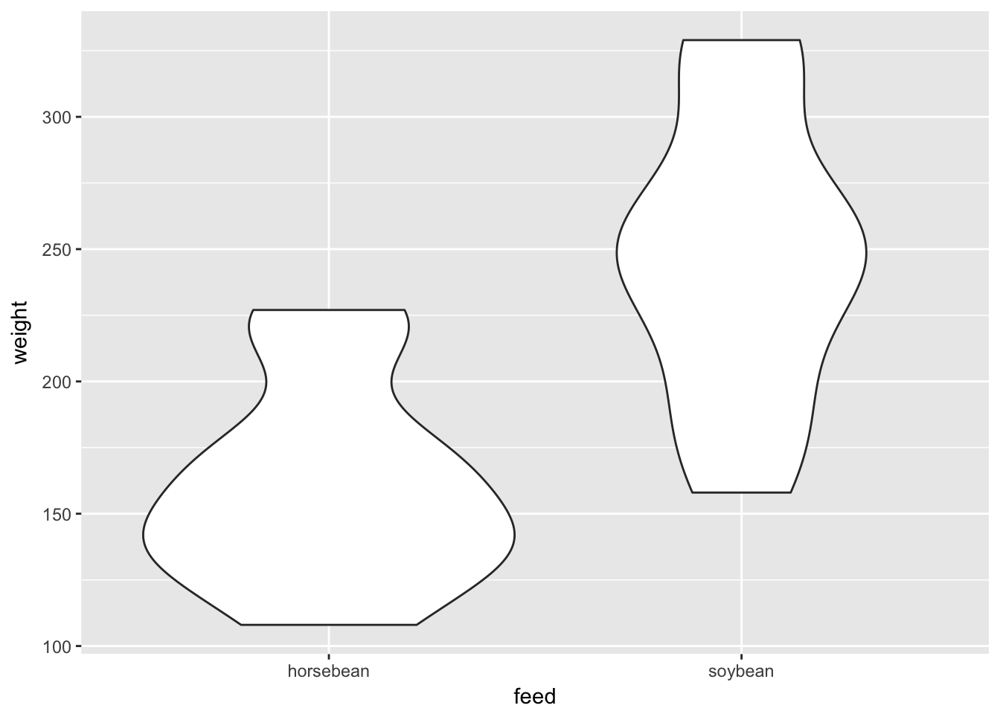
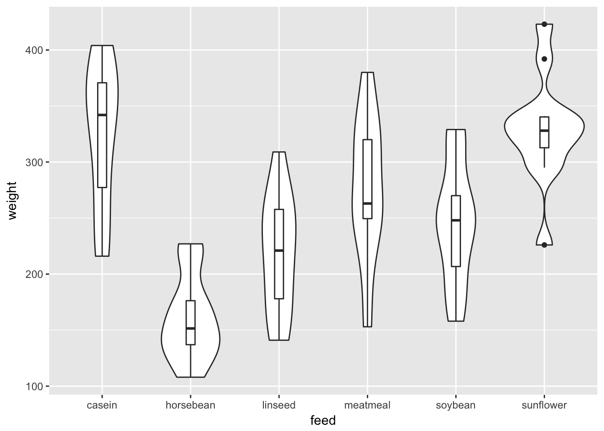
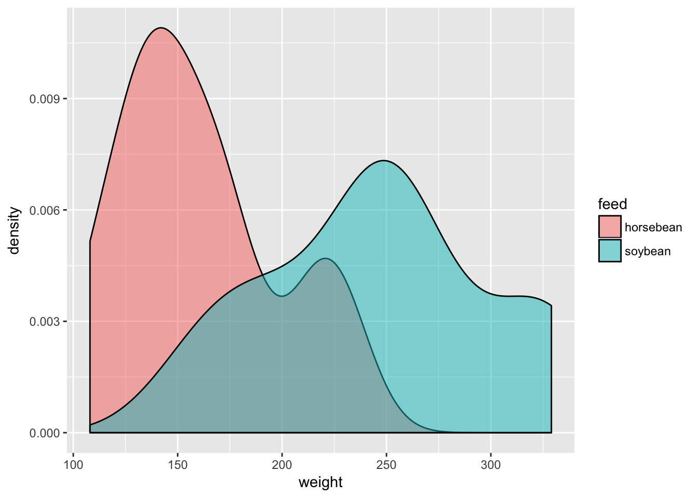
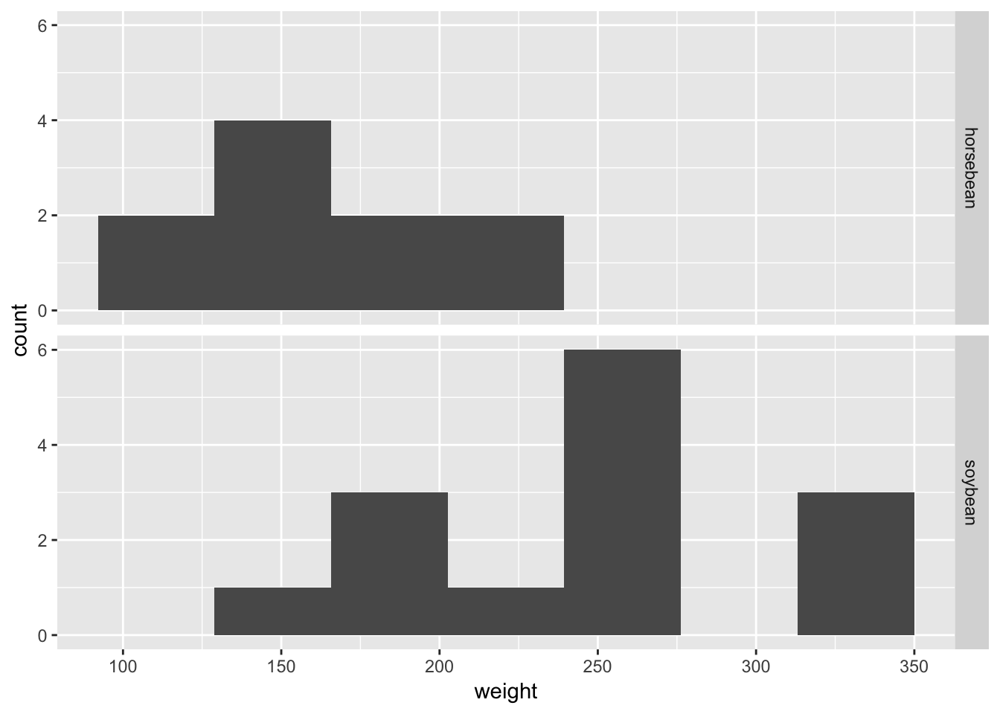

t-tests
Visualising your data first
Before you run any tests it’s worth plotting your data.
Assuming you have a continuous outcome and categorical (binary) predictor (here we use a subset of the built in chickwts data), a boxplot can work well:
chicks.eating.beans <- chickwts %>%
filter(feed %in% c("horsebean", "soybean"))
chicks.eating.beans %>%
ggplot(aes(feed, weight)) +
geom_boxplot()Figure 8.1: The box in a boxplot indictes the IQR; the whisker indicates the min/max values or 1.5 * the IQR, whichever is the smaller. If there are outliers beyond 1.5 * the IQR then they are shown as points.
Or a violin or bottle plot, which shows the distributions within each group:
chicks.eating.beans %>%
ggplot(aes(feed, weight)) +
geom_violin()
Layering boxes and bottles can work well too because it combines information about the distribution with key statistics like the median and IQR, and also because it scales reasonably well to multiple categories:
chickwts %>%
ggplot(aes(feed, weight)) +
geom_violin() +
geom_boxplot(width=.1)
Bottleplots are just density plots, turned 90 degrees. Density plots might be more familiar to some, but it’s hard to show more than 2 or 3 categories:
chicks.eating.beans %>%
ggplot(aes(weight, fill=feed)) +
geom_density(alpha=.5)
And density plots are just smoothed histograms (which you might prefer if you’re a fan of 80’s computer games):
chicks.eating.beans %>%
ggplot(aes(weight)) +
geom_histogram(bins=7) +
facet_grid(feed ~ .)
Running a t-test
Assuming you really do still want to run a null hypothesis test on one or two means, the t.test() function performs most common variants, illustrated below.
2 independent groups
Assuming your data are in long format:
t.test(weight ~ feed, data=chicks.eating.beans)##
## Welch Two Sample t-test
##
## data: weight by feed
## t = -4.5543, df = 21.995, p-value = 0.0001559
## alternative hypothesis: true difference in means is not equal to 0
## 95 percent confidence interval:
## -125.49476 -46.96238
## sample estimates:
## mean in group horsebean mean in group soybean
## 160.2000 246.4286Or equivalently, if your data are untidy and each group has it’s own column (e.g. chicks eating soybeans in one column and those eating horsebeans in another):
with(untidy.chicks, t.test(horsebean, soybean))##
## Welch Two Sample t-test
##
## data: horsebean and soybean
## t = -4.5543, df = 21.995, p-value = 0.0001559
## alternative hypothesis: true difference in means is not equal to 0
## 95 percent confidence interval:
## -125.49476 -46.96238
## sample estimates:
## mean of x mean of y
## 160.2000 246.4286Equal or unequal variances?
By default R assumes your groups have unequal variances and applies an appropriate correction (you will notice the output labelled ‘Welch Two Sample t-test’).
You can turn this correction off (for example, if you’re trying to replcate an analysis done using the default settings in SPSS) but you probably do want to assume unequal variances (see Ruxton 2006).
Paired samples
a <- rnorm(50, 2.5, 1)
b = a + rnorm(50, .5, 1)
t.test(a, b, paired=TRUE)##
## Paired t-test
##
## data: a and b
## t = -3.8082, df = 49, p-value = 0.0003904
## alternative hypothesis: true difference in means is not equal to 0
## 95 percent confidence interval:
## -0.7102907 -0.2195934
## sample estimates:
## mean of the differences
## -0.464942Note that we could also ‘melt’ the data into long format and use the paired=TRUE argument with a formula:
long.form.data <- data_frame(a=a, b=b) %>%
tidyr::gather()
with(long.form.data, t.test(value~key, paired=TRUE))##
## Paired t-test
##
## data: value by key
## t = -3.8082, df = 49, p-value = 0.0003904
## alternative hypothesis: true difference in means is not equal to 0
## 95 percent confidence interval:
## -0.7102907 -0.2195934
## sample estimates:
## mean of the differences
## -0.464942One-sample test
i.e. comparing sample mean with a specific value:
# test if mean of `outcome` variable is different from 2
somedata <- rnorm(50, 2.5, 1)
t.test(somedata, mu=2)##
## One Sample t-test
##
## data: somedata
## t = 2.6719, df = 49, p-value = 0.01021
## alternative hypothesis: true mean is not equal to 2
## 95 percent confidence interval:
## 2.102546 2.724778
## sample estimates:
## mean of x
## 2.413662References
Ruxton, Graeme D. 2006. “The Unequal Variance T-Test Is an Underused Alternative to Student’s T-Test and the Mann–Whitney U Test.” Behavioral Ecology 17 (4). Oxford University Press: 688–90. https://doi.org/10.1093/beheco/ark016.